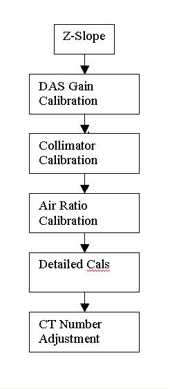

Operating Documentation
Direction 5196839-800, Rev# 6
RT16 and Xtra Service Info Adv
Operating Documentation |
| Required Persons | Preliminary Reqs | Procedure | Finalization |
|---|---|---|---|
| 1 | Timing Not Applicable | 6 hours | Timing Not Applicable |
The standard RT16 calibration process is to run calibrations or adjustment in sequence of the below flowchart.
Illustration 1: Calibration Process (Flowchart)

| Procedure Last Revised: | June 12, 2008 |
Bring up the main menu: It is represented as an icon located on the bottom of the screen labeled as [SCANNER UTILITIES] . Click the on-screen Scanner Utilities button.
Illustration 2: Scanner Utilities Main Menu

The Main menu consists of the following button selections:
Collimator Calibration - Runs the collimator calibration tool.
Detailed Calibration - Brings up the Detailed Calibration screen.
Center Phantom - Runs the phantom centering utility.
Auto CT Number Adjust – Runs the CT number adjust tool. For use during the calibration
Manual CT Number adjust - Runs the CT number adjust tool. For Customer use or CT # touch-up.
Air Ratio Calibration – Run air ratio cal.
DAS Gain Calibration – Run DAS gain calibration
Z-Slope – Update Z-slope calibration database
Quit - Exits the application
Click on the buttons following the process.
No finalization required.